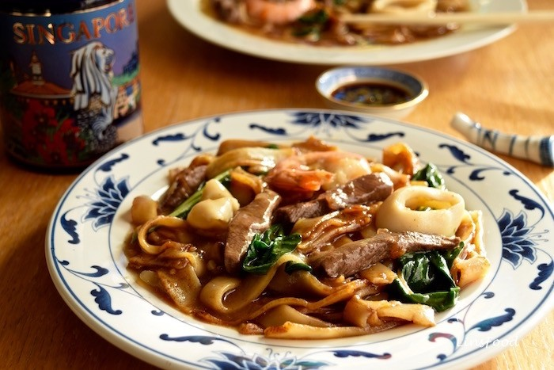

Singapore Beef and Seafood Hor Fun
The Singapore Hor Fun is a classic hawker centre noodle dish of Chinese
origin.

Ingredients |
Preperation Time: 15 mins
Cooking Time: 15 mins
|
Noodles
- 400 g fresh flat rice noodles
- 1 Tbsp sweet soy sauce (kicap manis)
- 1 Tbsp light soy sauce
- 1 tsp vegetable or peanut oil
Beef
-
200 g quick cook beef see infographic in post, on what cut to use
- 1 Tbsp light soy sauce
-
1 tsp Chinese Rice wine if you don't do alcohol, ¼ tsp clear
vinegar
- ½ tsp ground white pepper
- ½ tsp cornflour (cornstarch)
Sauce
-
500 ml chicken stock (2 cups water + 1 stock cube or stockpot)
- 1 tsp light soy sauce
- 1 tsp dark soy sauce
- 1 Tbsp oyster sauce
- 2 Tbsp cornflour (cornstarch) mixed with 2 Tbsp water/li>
Other Ingredients
- 2 squid tubes
- 8 large prawns (shrimps)
-
4 stalks Chinese vegetables like choy sim, tat soi or pak choi (or
just the good old spinach)
- 1 Tbsp vegetable or peanut oil
- 1 tsp sesame oil
- some ground white pepper
|
Instructions
Preparation Method
-
Drizzle the sweet and light soy sauces all over the noodles and mix
thoroughly, without breaking up the noodles. This is best done with your
hands. Set aside.
-
Slice the beef up thinly and add all the other ingredients to the beef
strips and mix thoroughly. Again, best done with your hands. Set aside
to marinate.
- Slice up the squid tubes into thin rings.
-
Clean and de-vein the prawns, leaving the shells or at least the tails
intact. The shells help to add flavour to the hor fun sauce.
-
If your vegetables are large, cut them up in two, separating the green
leaves from the stems. Otherwise, leave them whole.
Cooking Method
-
Heat 1 tsp of vegetable oil in a wok over a high heat and fry the garlic
for 15 seconds.
-
Throw in the noodles and fry for 2 minutes, tossing and stirring
constantly. At the end of the 2 minutes, some of the noodles will be
sticking to each other, that’s when you know they’re done. Dish up onto
a serving plate and keep warm on the stovetop as you continue cooking
everything else.
-
In the same wok, heat the 1 Tbsp of oil, on medium high heat and quickly
fry the beef strips for 2-3 minutes. You want the beef to be just
cooked, still slightly pink on the inside. However, if you prefer your
beef well done, go ahead and do so. Tip the cooked beef strips over the
noodles, along with any juices and fat from the wok. Keep warm.
-
In the same wok, with no added oil, wilt the vegetables for about 20-30
seconds, you’re going for a dark, glossy green. Tip the vegetables onto
the beef and noodles.
-
Pour your chicken stock, the light soy sauce, the dark soy sauce, the
oyster sauce and the sugar into the wok and bring to a boil on high
heat.
- When it’s boiling, add the prawns, cook for a minute.
- Add the squid, cook for a minute.
-
Add the cornflour mix stirring constantly, until the sauce thickens.
-
Take off the heat, drizzle the sesame oil all over and sprinkle a dash
of the white pepper.
- Pour all over the noodles and serve immediately.
NOTES
*Sauté pan: If you happen to own a nonstick or cast-iron pan, I would
recommend it for this recipe. But that said, any pan that you have can
work — you may just have to be a bit more vigilant with stirring so that
the rice and eggs don’t stick.